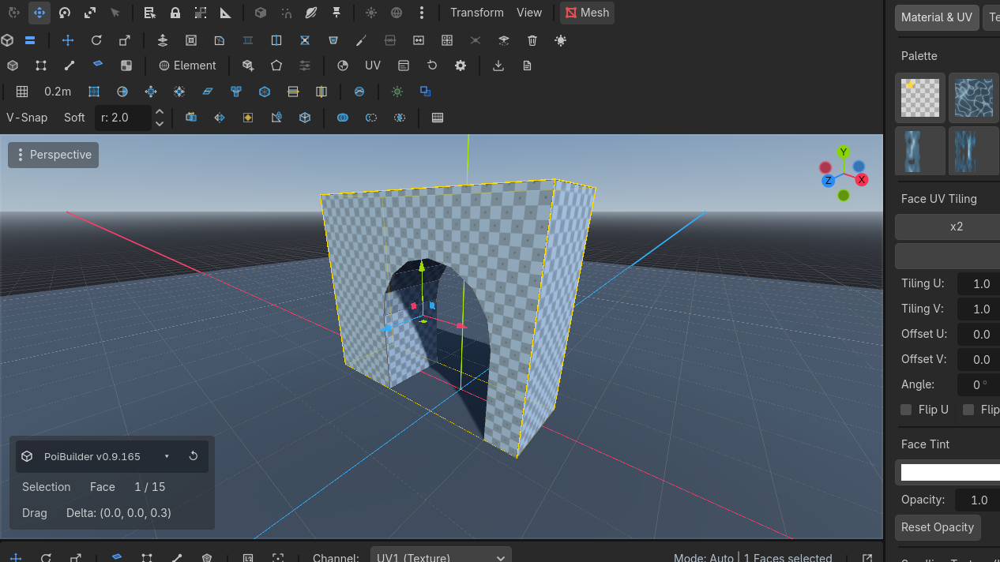

Moving
The element gizmo is Godot's own manipulator, aimed at the selection. Shift+Move extrudes. Shift+Scale insets. Snap and proportional editing are toggles.
Tools
MoveRow 1 · ToolsMoveWThe plugin's own move tool: drag elements or the whole object on the gizmo axes.Needs: A selection / RotateRow 1 · ToolsRotateERotate the selection around the gizmo rings; orientation space follows the Space button.Needs: A selection / ScaleRow 1 · ToolsScaleRAxis handles scale freely; the CENTER square scales all axes together (Shift + center on faces insets).Needs: A selection on the toolbar, or W E R. These are the plugin's tools. While a PBMesh is being edited the engine's Transform (Q) and Select (V) buttons are disabled so they cannot fight.
Orientation space — X
| Space | Gizmo follows |
|---|---|
| Element | The selected face/edge/vert's own basis |
| Object | The mesh node's axes |
| World | World axes |
The Space button cycles the same three.
Gestures
- Center square on Scale = uniform scale.
- Shift + center on faces = uniform inset.
- Shift + Move on faces/edges = live extrude (topology at drag begin).
- Shift + Scale on faces = live inset.

Snapping
| Control | Default | Effect |
|---|---|---|
| Snap toggle | Y | Snap element drags to the PoiBuilder grid |
| V-SnapV-SnapSoftRow 4 · SnappingV-SnapHold V (toggle available)Snaps dragged elements to the nearest mesh vertex (or hold V during a drag).Needs: A drag | toolbar (row 4) | Snap the drag pivot to the nearest vertex, including other meshes |
| SoftV-SnapSoftRow 4 · SnappingSoftUnbound (rebindable)Proportional editing: a move also drags nearby unselected vertices with a smooth falloff (radius beside the toggle).Needs: A selection | toolbar | Proportional editing — unselected vertices within the radius follow with falloff |
| r: spinner | 2.0 m | Influence radius |
V-Snap is a toggle, not a hold. (The engine's Select tool is V, and is disabled while editing.)
Grid keys
These work with nothing selected.
| Key | Action |
|---|---|
| [ / ] | Lower / raise grid elevation |
| - / = | Coarser / finer subdivisions |
| Shift+- / Shift+= | Halve / double the grid unit |
| \ | Reset elevation |
Full grid behaviour: Grid.
Use cases
Doorway to exact height
Vertex mode. Turn V-Snap on. Drag the head of the opening until it sticks to the neighbouring slab's vertex.
Soft-raise a terrain patch
Face or vertex mode. Turn Soft on, set r: to cover the mound. Move the center vertex up. Neighbours follow the falloff.
Shift+Move is extrude, not "constrained move". If you wanted a planar slide, release Shift.